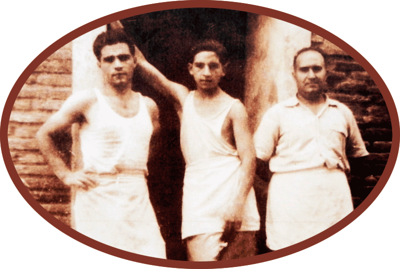

El nostre objectiu és mantenir-nos fidels el pa que oferim dia a dia a les nostres fleques. Així doncs, reivindiquem el pa ben fet, de qualitat i a l’abast de totes les taules.
Empresa

El nostre pa és amassat cada nit per oferir-lo sempre fresc durant el dia, amb una barreja pròpia de farines, la cura d’un mestre format en l’ofici, amb l’herència d’una tradició de més de 120 anys i quatre generacions de flequers. A Macxipa treballem cada dia per mantenir una elaboració diària i servir el pa fresc als nostres clients a través d’una xarxa que actualment té més de 202 botigues pròpies. El nostre objectiu és mantenir-nos fidels del pa que oferim dia a dia a les nostres fleques. Així doncs, reivindiquem el pa ben fet, de qualitat i a l’abast de totes les taules.